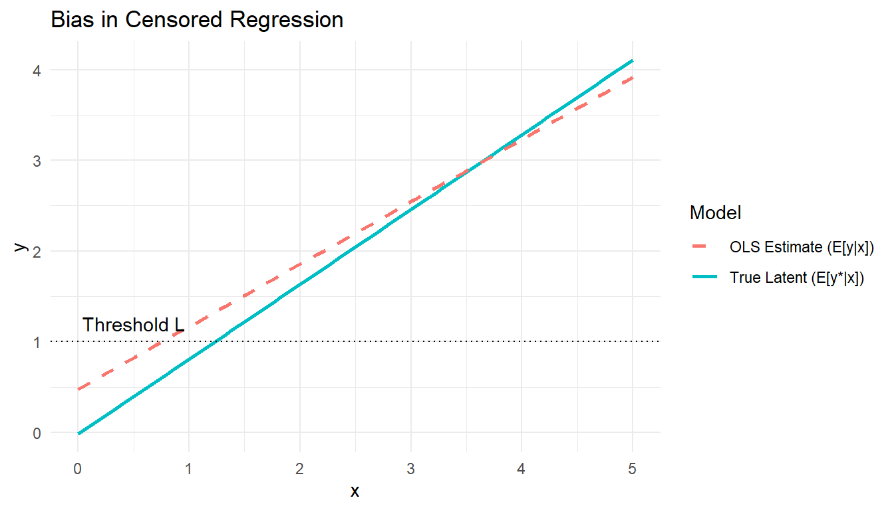
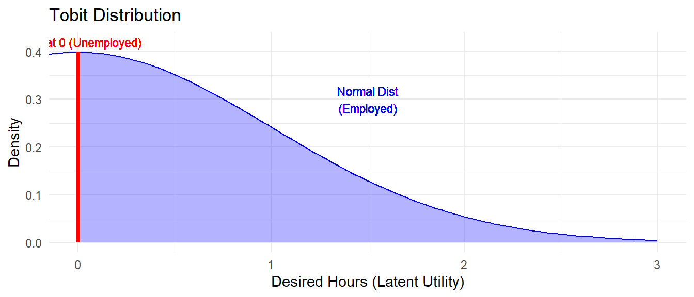

Tobit Model
Dealing with Unobserved Data: Censoring & Truncation
Theory
1. Dealing with Unobserved Data
When working with panel or cross-sectional data, we often encounter situations where data is incompletely observed. It is crucial to distinguish between two types:
A. Censored vs. Truncated Data
- Censored Data: Information is lost on the dependent variable (\(y\)), but we have full information on the regressors (\(x\)) for the entire sample.
- Example: Income surveys where high earners are recorded simply as “$100k+”. We know their age, education, etc., but their exact income is “right-censored.”
- Key Feature: We have a representative sample of the population, but the outcome value is “stuck” at a threshold for some.
- Truncated Data: We do not have the full sample. Data is lost on both the dependent variable and the regressors because the observation rule depends on \(y\).
- Example: Studying determinants of poverty but only sampling people below the poverty line. We completely lack data (both \(y\) and \(x\)) for anyone above the line.
- Key Feature: The sample is a non-representative sub-sample of the population.
2. The Latent Variable Model
To model these processes, we assume there is an underlying “Latent Variable” \(y^*\) that satisfies the classical linear assumptions:
\[ y_i^* = x_i' \beta + \varepsilon_i \]
However, \(y^*\) is not perfectly observed.
Observation Rules
1. Censoring from Below (Left-Censoring)
We observe \(y_i\) based on a threshold \(L\):
\[ y_i = \begin{cases} y_i^* & \text{if } y_i^* > L \\ L & \text{if } y_i^* \leq L \end{cases} \]
Result: A “spike” (mass point) in the distribution of \(y\) at \(L\).
2. Censoring from Above (Right-Censoring)
\[ y_i = \begin{cases} y_i^* & \text{if } y_i^* < U \\ U & \text{if } y_i^* \geq U \end{cases} \]
3. Truncation from Below
We only observe unit \(i\) if \(y_i^* > L\).
\[ \text{Sample Rule: Keep } i \text{ if } y_i^* > L \]
Result: The distribution is “cut off.” The area under the curve must sum to 1, so the remaining probability density is scaled up.
3. Why OLS Fails (Bias Analysis)
If we run a standard OLS regression (\(y\) on \(x\)) using censored data, our estimates will be biased.
Visualizing the Bias
At low values of \(x\), many observations hit the lower bound \(L\). This flattens the slope of the observed relationship relative to the true latent relationship.
The Expectation Problem
The expected value of the observed data is:
\[ E[y|x] = P(y^* \le L) \cdot L + P(y^* > L) \cdot E[y^* | y^* > L, x] \]
This relationship is non-linear.
- At high \(x\), \(E[y|x] \approx E[y^*|x]\) (convergence to true slope).
- At low \(x\), data piles up at \(L\), dragging the expectation line flat.
- Consequence: OLS will generally underestimate the slope coefficient \(\beta\).
4. Estimation Strategies
Since OLS is inconsistent, we must use Maximum Likelihood Estimation (MLE). We need to make parametric assumptions (usually Normality) about the error term: \(\varepsilon \sim N(0, \sigma^2)\).
Case A: Censored Data (Left-Censored at \(L\))
The density of observed \(y\) is a mixture of a continuous part and a discrete probability mass.
- Continuous part (\(y_i > L\)): We observe the actual value. The likelihood contribution is the PDF: \(f^*(y_i | x_i)\).
- Censored part (\(y_i = L\)): We know only that \(y^* \le L\). The likelihood contribution is the probability (CDF): \(F^*(L | x_i)\).
We define a dummy indicator \(d_i\):
\[ d_i = \begin{cases} 1 & \text{if } y_i > L \quad (\text{Uncensored}) \\ 0 & \text{if } y_i = L \quad (\text{Censored}) \end{cases} \]
The Log-Likelihood Function:
\[ \ell(\beta, \sigma^2) = \sum_{i=1}^N \left[ d_i \ln \left( \frac{1}{\sigma} \Phi\left(\frac{y_i - x_i'\beta}{\sigma}\right) \right) + (1-d_i) \ln \Phi\left(\frac{L - x_i'\beta}{\sigma}\right) \right] \]
Case B: Truncated Data (Truncated from below at L)
Here, we do not observe anyone with \(y^* \le L\). We must re-normalize the probability density so it integrates to 1 over the range \((L, \infty)\).
\[ f(y_i | y_i > L, x_i) = \frac{f^*(y_i|x_i)}{P(y_i > L | x_i)} = \frac{\frac{1}{\sigma}\phi(\frac{y_i - x_i'\beta}{\sigma})}{1 - \Phi(\frac{L - x_i'\beta}{\sigma})} \]
The Log-Likelihood Function:
\[ \ell = \sum_{i=1}^N \left[ \ln \left( \frac{1}{\sigma}\Phi(\cdot) \right) - \ln \left( 1 - \Phi\left(\frac{L - x_i'\beta}{\sigma}\right) \right) \right] \]
Intuition: In the truncated case, the denominator \(1 - \Phi(\cdot)\) essentially tells the model: “Hey, we are missing the left tail of the bell curve, so inflate the probabilities of the data we do see to account for that missing mass.”
5. The Tobit Model (Censored Normal Regression)
The Tobit model is the specific and most common case of censored regression where the threshold is zero (\(L=0\)) and censoring is from below.
Setup
- Latent Variable: \(y_i^* = x_i'\beta + \varepsilon_i\), with \(\varepsilon_i \sim N(0, \sigma^2)\).
- Observation Rule:
\[ y_i = \max(0, y_i^*) \]
Application: Labor Supply (Hours Worked)
A classic example is hours worked (\(H_i\)).
- \(H_i^*\): Desired hours (latent utility). A person might desire “-5 hours” of work (meaning they need a high wage just to start working).
- \(H_i\): Actual observed hours. Since you can’t work negative hours, we observe 0.

Deriving the Likelihood
We split the sample into those working (\(H_i > 0\)) and those not working (\(H_i = 0\)).
- For \(H_i > 0\) (Uncensored): Contribution is the density of the normal distribution:
\[ \frac{1}{\sigma} \Phi\left(\frac{y_i - x_i'\beta}{\sigma}\right) \]
- For \(H_i = 0\) (Censored): Contribution is the probability that latent utility is negative:
\[ \mathbb{P}(y_i^* \le 0) = \mathbb{P}\left(\frac{y_i^* - x_i'\beta}{\sigma} \le \frac{-x_i'\beta}{\sigma}\right) = \Phi\left(-\frac{x_i'\beta}{\sigma}\right) = 1 - \Phi\left(\frac{x_i'\beta}{\sigma}\right) \]
Combined Log-Likelihood:
\[ \ell(\beta, \sigma) = \sum_{y_i = 0} \ln \left[ 1 - \Phi\left(\frac{x_i'\beta}{\sigma}\right) \right] + \sum_{y_i > 0} \ln \left[ \frac{1}{\sigma} \phi\left(\frac{y_i - x_i'\beta}{\sigma}\right) \right] \]
Identification & Interpretation
- Ideally, we estimate \(\beta\) and \(\sigma^2\) separately.
- However, if there is high multicollinearity or little variation in the censored portion, it can be difficult to disentangle \(\beta\) from \(\sigma\).
- Homoskedasticity Assumption: Crucial for Tobit. If \(\text{Var}(\varepsilon)\) varies with \(x\), the Tobit estimates are inconsistent (unlike OLS, where heteroskedasticity only affects standard errors).
Marginal Effects (ME)
In Tobit, there are two different marginal effects of interest:
- Effect on the Latent Variable:
\[ \frac{\partial E[y^*|x]}{\partial x_k} = \beta_k \]
Interpretation: How a change in \(x\) changes “desired” hours.
- Effect on the Observed Variable:
\[ \frac{\partial E[y|x]}{\partial x_k} = \beta_k \cdot \Phi\left(\frac{x'\beta}{\sigma}\right) \]
Interpretation: How a change in \(x\) changes actual hours worked.
Note: The effect on actual hours is always smaller than the effect on desired hours because \(0 \le \Phi(\cdot) \le 1\). This dampening factor \(\Phi\) represents the probability of being uncensored (actually working).